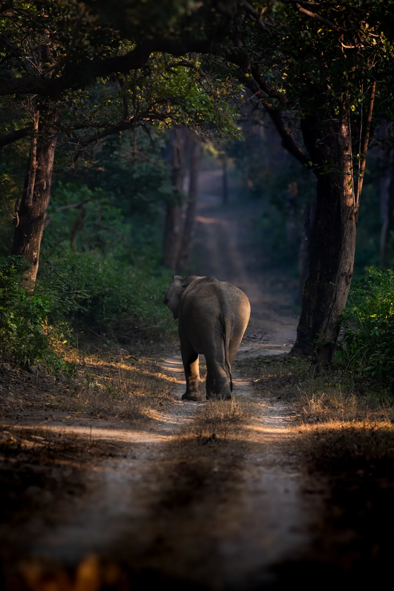

Mammals
- Bengal tiger
- Asian elephant
- Indian leopard
- Sambar
- Chital
- Hog deer
- Wild boar
- Otters
- Jungle cat

Corbett · Uttarakhand · Northern India
Elephants, tigers and birdlife in the Himalayan foothills.
Get to know Corbett
In Corbett, the landscape changes with the river. Sal forests give way to grassy openings, pebbled riverbanks and wide valleys. An elephant may appear between the trees. A kingfisher might flash over the water. Somewhere deeper in the forest, a tiger is moving on its own schedule.
Established in 1936, Corbett is India's oldest national park and an important tiger conservation landscape. Its mix of rivers, forest, hills and grassland makes it particularly rewarding for people whose wildlife interests extend beyond big cats.
A beautiful introduction to the wildlife of India's sub-Himalayan forests.
Our journeys are about learning to notice the forest, not chasing wildlife for a photograph. There's always more to discover, even when a tiger stays out of sight.
Plan Your JourneyWildlife, birds, flora and fauna
These animals and plants belong to the wider reserve ecosystem. They are not a checklist of guaranteed sightings. Your naturalist helps you notice what each safari offers.
Look closely and you may also notice butterflies, insects, fungi and other smaller forest life.
Birdwatching: Government sources record 580 bird species. Corbett is a rewarding destination for birdwatchers, especially around rivers, wetlands and forest edges.
Habitat: Sal forest, riverbanks, foothill valleys, grasslands and freshwater habitats. Different places within a reserve can feel like different forests.
Moments from the forest
A closer look at the animals, birds and landscapes featured in the field collections shared with Weavor. Take your time with the details.
Wildlife photograph
From this reserve collection
Wildlife photograph
From this reserve collection
Wildlife photograph
From this reserve collection
Wildlife photograph
From the wider India wildlife collection
Wildlife photograph
From the wider India wildlife collection
Photographs marked as part of the wider India wildlife collection are illustrative and are not represented as having been taken in Corbett. Actual wildlife encounters vary by trip.
Understanding tiger country
These numbers describe the reserve and its habitats. They do not predict wildlife encounters or guarantee tiger sightings.
Corbett | Dated assessment and habitat records
The tiger estimate is from the 2022 national assessment, published in 2023, within reserve boundaries. It is not a live count or a sighting guarantee. Species figures are recorded biodiversity totals, not sightings expected on one trip. Read the 2022 report.
Sal forest, riverbanks, foothill valleys, grasslands and freshwater habitats.
Understand the landscape
Corbett's Ramganga River and its adjoining habitats help support fish, crocodilians, birds and mammals. Elephants use the wider forest landscape, while different deer species occupy different habitats. The park's wildlife is best understood as part of this living system.
Plan with confidence
We'll help you plan around park regulations, permit availability and sensible travel connections. The right pace matters more than collecting as many drives as possible.
Opening dates vary by safari zone. The reserve lists Dhikala reopening on 15 November and Dhela as a year-round tourism zone, subject to current conditions. Confirm the zone and dates before travel.
Ramnagar is the principal gateway town and rail connection for many Corbett itineraries. Travellers commonly connect from Delhi by road or rail; other transfer options depend on the lodge and entry zone.
We suggest starting with 3 to 5 nights. We'll work out an itinerary that suits your pace, preferred accommodation and other places you hope to visit in India.
Safari permits, entry zones, vehicle arrangements, access restrictions and seasons are determined by the responsible forest authorities. We confirm current rules before you book.
Learn to read the jungle
When you travel with someone who knows the forest, the smallest observations can open up a whole new story.
Look for signs of elephants using forest tracks and grassy openings.
Watch the Ramganga river ecosystem for birds, crocodilians and other water-associated life.
Learn how sal woodland and grasslands support different mammals and their predators.
Before you travel
Yes. Its sub-Himalayan foothills, rivers, elephants and extensive birdlife give it a noticeably different character.
Wild Asian elephants live in the wider reserve and may be encountered in permitted tourism areas. Like all wildlife sightings, encounters are not guaranteed.
No. Seasonal schedules vary by zone, and some close earlier than others. We check the specific areas appropriate for your travel dates.
Many travellers arrive through Delhi and continue towards Ramnagar. We can discuss travel time, lodge placement and an itinerary that avoids unnecessary transfers.
No. Tigers and other animals are wild, and no sighting is guaranteed. We suggest allowing several drives and staying curious about everything the forest reveals.
Plan your Corbett journey
Tell us about the wildlife you're most interested in, your preferred dates and who you're travelling with. We'll help you explore what a considered Corbett journey could look like.
You don't need to have an itinerary worked out before you enquire.
plan@weavor.meOther forests to discover
The tiger figure shown above is the 2022 national assessment estimate within reserve boundaries, published in 2023. It is not a current live population count, and figures for different reserves may involve different study boundaries or survey methods. Bird and plant figures are species records, not an indication of what one visitor will see. Park operating periods should be checked again before travel.